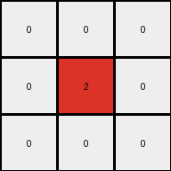
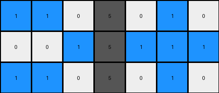
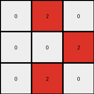
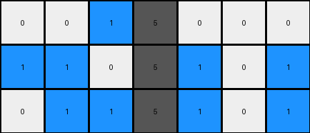

003 • History
- puzzle_id:
6-0520fde7
- description:
example_3
- timestamp:
24.357.081407
- call_count:
3
Begin puzzle: 6-0520fde7
example_1
input
[[1 0 0 5 0 1 0]
[0 1 0 5 1 1 1]
[1 0 0 5 0 0 0]]
output
[[0 0 0]
[0 2 0]
[0 0 0]]
images

{kind=link}

observations
The user wants me to analyze the input and output grids of the first example in the provided ARC puzzle and develop a natural language program describing the transformation.
First, I will describe the input and output grids. Then, I will use code to analyze the grids, focusing on dimensions, color counts, and differences between the grids. Finally, I will formulate a natural language program that explains how the input grid is transformed into the output grid.
Plan:
Describe the input and output grids visually.
Use code to get grid dimensions, color counts, and identify changed pixels.
Analyze the code output to understand the transformation.
Formulate a natural language program.
The input grid shows three rows and seven columns. It contains blue (1), white (0), and gray (5) pixels. There is a vertical line of gray pixels in the middle column. Blue pixels appear on the left and right sides.
The output grid is smaller, with three rows and three columns. It contains white (0) and red (2) pixels. There is a single red pixel in the center of the grid.
input:
width: 7
height: 3
colors:
0: 12
1: 6
5: 3
objects:
- color: blue (1), shape: appears to form 'L' shapes on the left and a horizontal line on the right.
- color: gray (5), shape: a vertical line in the middle column.
- color: white (0), shape: fills the remaining spaces.
output:
width: 3
height: 3
colors:
0: 8
2: 1
objects:
- color: red (2), shape: single pixel in the center.
- color: white (0), shape: fills the remaining spaces.
import numpy as np
input_grid = np.array([[1, 0, 0, 5, 0, 1, 0],
[0, 1, 0, 5, 1, 1, 1],
[1, 0, 0, 5, 0, 0, 0]])
output_grid = np.array([[0, 0, 0],
[0, 2, 0],
[0, 0, 0]])
input_height, input_width = input_grid.shape
output_height, output_width = output_grid.shape
print(f"Input grid dimensions: {input_width} x {input_height}")
print(f"Output grid dimensions: {output_width} x {output_height}")
input_colors = {}
for i in range(10):
count = np.sum(input_grid == i)
if count > 0:
input_colors[i] = count
print(f"Input color counts: {input_colors}")
output_colors = {}
for i in range(10):
count = np.sum(output_grid == i)
if count > 0:
output_colors[i] = count
print(f"Output color counts: {output_colors}")
differences = []
for y in range(output_height):
for x in range(output_width):
# Attempt to map the output cell back to the input grid
input_x = x + 2 # Adjusting based on visual inspection, the output seems centered around the '5' column
input_y = y
if 0 <= input_y < input_height and 0 <= input_x < input_width:
if input_grid[input_y, input_x] != output_grid[y, x]:
differences.append({
'output_coords': (x, y),
'output_color': output_grid[y, x],
'input_coords': (input_x, input_y),
'input_color': input_grid[input_y, input_x]
})
else:
differences.append({
'output_coords': (x, y),
'output_color': output_grid[y, x],
'input_coords': None,
'input_color': None
})
print("\nDifferences between input and output (considering a potential center alignment):")
for diff in differences:
print(diff)
differences:
cells_changed: 1
colors_changed:
- white to red
transformation:
- The output grid is smaller than the input grid.
- The output grid appears to be focused around the center column of the input grid.
- The central gray (5) pixel in the input is transformed into a red (2) pixel in the output.
- All other pixels in the 3x3 output grid are white (0).
natural_language_program:
context:
- The input grid contains blue (1), white (0), and gray (5) pixels arranged in a 3x7 grid.
- A vertical line of gray (5) pixels is present in the central column (column index 3).
- The surrounding pixels are blue (1) and white (0).
initialize_output_grid:
- Create a new 3x3 output grid filled with white (0) pixels.
color_palette:
- The output grid uses white (0) and red (2).
transformation_steps:
- Identify the central column of the input grid.
- Identify the pixel in the central column of the input grid's middle row. This pixel is gray (5).
- Change the color of the center pixel of the output grid to red (2).
example_2
input
[[1 1 0 5 0 1 0]
[0 0 1 5 1 1 1]
[1 1 0 5 0 1 0]]
output
[[0 2 0]
[0 0 2]
[0 2 0]]
images
{kind=link}

{kind=link}

observations
The user wants me to analyze the second example of the ARC puzzle, building on the analysis of the first example.
Plan:
Describe the input and output grids of the second example visually.
Use code to analyze the grids, focusing on dimensions, color counts, and differences between the grids, similar to the first example.
Compare the findings with the first example to refine the natural language program.
Formulate a natural language program that explains how the input grid is transformed into the output grid based on both examples.
Example 2 - Initial Observations:
The input grid of the second example is similar to the first, with three rows and seven columns, containing blue, white, and gray pixels. The central column is gray.
The output grid is also 3x3 and contains white and red pixels. The red pixels are at the top center, middle right, and bottom center positions.
observations
The input grid is a 3x7 grid. It has blue (1), white (0), and gray (5) pixels. There’s a vertical column of gray pixels in the center. The blue pixels appear in clusters on the left and right sides of the gray column.
The output grid is a 3x3 grid. It has white (0) and red (2) pixels. The red pixels form a vertical line on the central column and the rightmost column.
input:
width: 7
height: 3
colors:
0: 8
1: 8
5: 3
objects:
- color: blue (1), shape: appears as 'L' shapes on the left and a horizontal line on the right.
- color: gray (5), shape: a vertical line in the middle column.
- color: white (0), shape: fills the remaining spaces.
output:
width: 3
height: 3
colors:
0: 6
2: 3
objects:
- color: red (2), shape: pixels at the top-center, middle-right, and bottom-center.
- color: white (0), shape: fills the remaining spaces.
import numpy as np
input_grid = np.array([[1, 1, 0, 5, 0, 1, 0],
[0, 0, 1, 5, 1, 1, 1],
[1, 1, 0, 5, 0, 1, 0]])
output_grid = np.array([[0, 2, 0],
[0, 0, 2],
[0, 2, 0]])
input_height, input_width = input_grid.shape
output_height, output_width = output_grid.shape
print(f"Input grid dimensions: {input_width} x {input_height}")
print(f"Output grid dimensions: {output_width} x {output_height}")
input_colors = {}
for i in range(10):
count = np.sum(input_grid == i)
if count > 0:
input_colors[i] = count
print(f"Input color counts: {input_colors}")
output_colors = {}
for i in range(10):
count = np.sum(output_grid == i)
if count > 0:
output_colors[i] = count
print(f"Output color counts: {output_colors}")
differences = []
for y in range(output_height):
for x in range(output_width):
# Adjusting based on visual inspection, the output seems centered around the '5' column
input_x_candidates = [x + 2]
input_y = y
found_match = False
for input_x in input_x_candidates:
if 0 <= input_y < input_height and 0 <= input_x < input_width:
if input_grid[input_y, input_x] != output_grid[y, x]:
differences.append({
'output_coords': (x, y),
'output_color': output_grid[y, x],
'input_coords': (input_x, input_y),
'input_color': input_grid[input_y, input_x]
})
found_match = True
break
if not found_match:
differences.append({
'output_coords': (x, y),
'output_color': output_grid[y, x],
'input_coords': None,
'input_color': None
})
print("\nDifferences between input and output (considering a potential center alignment):")
for diff in differences:
print(diff)
differences:
cells_changed: 3
colors_changed:
- white to red
transformation:
- The output grid is smaller than the input grid (3x3 vs 3x7).
- The output grid seems to correspond to a 3x3 section centered around the middle column of the input.
- Comparing with Example 1, the presence of a gray (5) in the input's central column seems significant for triggering a red (2) in the output.
- In this example, the gray pixels are at (0, 3), (1, 3), and (2, 3) in the input. The corresponding output positions that are red are (0, 1), (1, 2), and (2, 1). This doesn't seem like a direct mapping.
- Let's consider the colors *adjacent* to the central gray column in the input.
- Top row: left of gray is blue (1), right is white (0). Output top center is red (2).
- Middle row: left of gray is blue (1), right is blue (1). Output middle right is red (2).
- Bottom row: left of gray is blue (1), right is white (0). Output bottom center is red (2).
natural_language_program:
context:
- The input grid is a 3x7 grid containing blue (1), white (0), and gray (5) pixels.
- A vertical line of gray (5) pixels exists in the central column (column index 3).
- Other pixels are either blue (1) or white (0).
initialize_output_grid:
- Create a 3x3 output grid filled with white (0) pixels.
color_palette:
- The output grid uses white (0) and red (2) pixels.
transformation_steps:
- Identify the central column of the input grid.
- For each row in the input grid:
- If the pixel to the left of the central gray pixel is blue (1), set the corresponding left pixel in the output row to red (2).
- If the pixel to the right of the central gray pixel is blue (1), set the corresponding right pixel in the output row to red (2).
Review of Findings and Refinement:
The initial natural language program based on Example 1 focused on the central gray pixel. However, Example 2 shows that the red pixels in the output don’t directly correspond to the gray pixels. Instead, they seem related to the blue pixels adjacent to the central gray column in the input.
Let’s refine the natural language program to incorporate this observation. The output grid still seems to be a 3x3 window centered around the central column of the input.
Revised Natural Language Program (considering both examples):
natural_language_program:
context:
- The input grid is a 3x7 grid containing blue (1), white (0), and gray (5) pixels.
- A vertical line of gray (5) pixels is present in the central column (column index 3).
- Other pixels are either blue (1) or white (0).
initialize_output_grid:
- Create a 3x3 output grid filled with white (0) pixels.
color_palette:
- The output grid uses white (0) and red (2) pixels.
transformation_steps:
- Consider a 3x3 subgrid of the input, centered around the central column (column index 3).
- For each row in the input grid (and corresponding row in the output grid):
- If the pixel immediately to the left of the central gray pixel in the input is blue (1), set the left pixel of the output row to red (2).
- If the central pixel in the input row is gray (5), set the center pixel of the output row to red (2).
- If the pixel immediately to the right of the central gray pixel in the input is blue (1), set the right pixel of the output row to red (2).
natural_language_program:
context:
- The input grid is a 3x7 grid containing blue (1), white (0), and gray (5) pixels.
- A vertical line of gray (5) pixels is present in the central column (column index 3). This column is a key feature for the transformation.
- The surrounding pixels are either blue (1) or white (0).
initialize_output_grid:
- Create a 3x3 output grid filled with white (0) pixels.
color_palette:
- The output grid uses white (0) and red (2) pixels.
transformation_steps:
- Consider a 3x3 window in the input grid, centered vertically and horizontally around the central gray column.
- For each row in the input grid (and the corresponding row in the output grid):
- **Left Column of Output:** If the pixel immediately to the left of the central gray pixel in the input row is blue (1), set the leftmost pixel in the output row to red (2).
- **Center Column of Output:** If the pixel in the central column of the input row is gray (5), set the center pixel in the output row to red (2).
- **Right Column of Output:** If the pixel immediately to the right of the central gray pixel in the input row is blue (1), set the rightmost pixel in the output row to red (2).
example_3
input
[[0 0 1 5 0 0 0]
[1 1 0 5 1 0 1]
[0 1 1 5 1 0 1]]
output
[[0 0 0]
[2 0 0]
[0 0 2]]
images
{kind=link}


observations
INSTRUCTIONS:
above is a pair of example input and output grids
document your initial observations and impressions
begin with a verbal description of your perception of the input and output grid
use
code_executionto examine the grid information and verify the assumptions about size, colors, objects, and transformations. Focus your analysis on aspects like:Counting the occurrences of each color.
How to identify the coordinates of pixels that have changed color or position.
Determining if the dimensions of the grid have changed.
Analyzing the count, size, shape, and relative positions of objects (contiguous blocks of the same color).
since the code you use may not be carried forward on following prompts, be sure to have the code print your findings in the output
use what you learn to develop a natural language program of the transformation rule.
review your findings and try to determine the natural language description of the transformation rule. How does the information captured in the YAML block inform your understanding of the transformation?
use a yaml block to capture details (examples):
input:
width: X
height: Y
colors:
- N: (count)
objects:
- size, position and color - desc
differences:
cells_changed: N
colors_changed: desc
transformation:
- speculate on transformation rules
final step - provide a thorough natural language program to tell another intelligent entity how to transform the input grid into the output grid
You will examine and analyze the example grids
For each example pair, your goal is to derive a natural language description of the transformation rule that explains how the input is changed to produce the output. This “natural language program” should describe the steps or logic involved in the transformation.
the natural language program should be sufficient for an intelligent agent to perform the operation of generating an output grid from the input, without the benefit of seeing the examples. So be sure that the provide
context for understanding the input grid (objects, organization and important colors) particularly context for how to identify the ‘objects’
process for initializing the output grid (copy from input or set size and fill)
describe the color palette to be used in the output
describe how to determine which pixels should change in the output
For example, it might state:
copy input to working output
identify sets of pixels in blue (1) rectangles in working grid
identify to largest rectangle
set the largest rectangle’s pixels to red (2)
But remember - any information that describe the story of the transformations is desired. Be flexible and creative.
See also